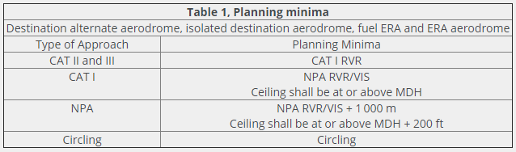

take-off alternate
oxygen, above 39 000 ft
VAT
Bird strike
Jet airplane
Minimums:
below the crews operational minimums, the point beyond which the approach must not be continued is:
To commence an approach, the only criteria to take in account is the RVR/visibility. The ceiling is to be taken in account during flight planning
1500 m => If question mentions EASA
3 km => If question does not mention EASA
IFR, shall not commence take-off unless the expected weather conditions at the destination and/or required alternate aerodrome(s) are at or above ha már mozog a repülő nem kell a +- 1 óra
- twin-engined aircraft
- does not exceed the equivalent of one hour of flight time, at cruising speed with only one engine operative.
- for a 2-engined aeroplane must be located within 60 minutes at one engine cruise speed.
- 3 or more engines: distance not exceeding 2 hours of flight at cruising speed with 1 engine inoperative.
- at least one: unless the destination aerodrome is an isolated aerodrome.
- When the weather at destination is below minimums one hour before and one hour after expected ETA.
- at the predicted time of arrival equal to or better than the minimum conditions required for aerodrome use.
- Cloud ceiling and RVR (a base nem jo, mert az lehet lelogo felho)
- two independent runways are available and expected weather conditions (1 hour before / 1 hour after) are such that ceiling is 500 ft above MDA or 2 000 ft AAL, whichever is higher and visibility at least 5 km.
- 60 (minutes at the cruise speed, one engine inoperative)
- 60 minutes at the cruise speed, one engine inoperative. (below 20pax and 45360kg: 120 or 120-180)
- 60 minutes at cruising speed with one engine unserviceable.
- 1 hour flight time at one engine inoperative cruising speed.
- an ETOPS en route alternate aerodrome is available, within either the operator's approved diversion time, or a diversion time based on the MEL generated serviceability status of the aeroplane, whichever is shorter.
- ceiling greater or equal to DH/MDH, and VH (horizontal visibility) greater or equal to VH required for landing, with an available instrument approach procedure.
- chocks off chocks on
- The total time from the moment an aeroplane first moves for the purpose of taking off until the moment it finally comes to rest at the end of the flight.
- 110°/110°/140°
- 60 duty hours in any 7 consecutive days;
- 110 duty hours in any 14 consecutive days; and
- 190 duty hours in any 28 consecutive days
- 100 hours of flight time in any 28 consecutive days;
- 900 hours of flight time in any calendar year; and
- 1 000 hours of flight time in any 12 consecutive calendar months.
- 1 hour
- 10 hours
- 3 take-offs and 3 landings in the preceding 90 days
- min IFR ops: 5 IFR flights, including 3 instrument approaches, 90 days
- 12 months experience as an operating cabin crew member and has completed an appropriate courses
- 12 months.
- communications shall be maintained by ground crew and qualified crew on board.
- It is permissible when relevant precautions are taken except when using AVGAS or wide-cut fuels.
- is acceptable provided that the ground area beneath the exits intended for emergency evacuation and slide deployment areas are kept clear.
- AFTER 31 march 2000 6 ft, aeroplane on the ground, one or more legs of the landing gear collapsed.
- BEFORE 31 march 2000 6 ft, aeroplane on the ground, landing gear extended.
- out of service when: 1,2,3,4,5,6 összes válasz
- 5 700 kg<
- prior to the aircraft being capable of moving under its own power.
- 27 000 kg<
- 25 hours
- 60 days.
- prior to the aeroplane moving under its own power until the termination of the flight when the aeroplane is no longer capable of moving under its own power.
- keep the conversations and sound alarms: 30 minutes of operation.
- 30 minutes or 2 hours of its operation, depending upon the date of the first issue of its individual Certificate of Airworthiness.
- NO cabin attendants communications! (12456 jo)
- 1 cabin crew must be included
- 1 cabin crew member for every 50, or fraction of 50, passenger seats installed on the same deck of the aeroplane
- 150 passengers flight continue back to Paris as scheduled Yes, provided that a report is submitted to the Authority after completion of the flight. / 1 cabin crew per 50 PAX” rule
- Safety manager
- supplemental oxygen
- passengers
- 10% of the passengers shall be supplied with oxygen throughout the entire flight time, after 30 minutes at pressure altitude greater than 10 000 ft but not exceeding 13 000 ft.
- the entire flight time at pressure altitudes above 13 000 ft.
- cabin crew members
- the entire flight time at pressure altitudes above 13 000 ft
- after 30 minutes between 10000 and 13000 ft
- required to operate at pressure altitudes above 10 000 ft.
- flight deck crew members to wear an oxygen mask: 41000 ft< (410)
- passengers
- supplemental oxygen
- passengers
- 100% of the passengers: the entire flight time where the cabin pressure altitude exceeds 15 000 ft, but in no case less than 10 minutes.
- 10% of pax between 10 000 ft and 14 000 ft after the first 30 minutes.
- The aircraft will be equipped with a warning system indicating that the cabin altitude is higher than 3 000 m
- provide passengers on board with oxygen following a cabin depressurisation.
- 11000 ft: Both pilots need to put on their oxygen mask if the time at this altitude is more than 30 minutes.
- passengers
- minimum amount of oxygen in
- 1) order to maintain a supply throughout the entire flight time where the cabin pressure altitude is greater than 13 000 ft.
- 2) order to maintain a supply throughout the entire flight time where the cabin pressure altitude is greater than 10 000 ft and smaller than 13000 ft minus 30 minutes.
- 3) no case less than 30 minutes for airplanes certified to fly up to 25 000 ft.
- 4) no case less than 2 hours for airplanes certified to fly at over 25 000 ft.
- For the flight crew members, quick donning type oxygen masks are compulsory on board any pressurized aircraft
- 25 000 ft<
oxygen, above 39 000 ft
- shall exceed the number of seats by at least 10%.
- 110% of the seating capacity.
- 200*1,1=220
- no supplemental oxygen/no flight time limitation
- 1) one element of the approach light system
- 2) the runway threshold
- 4) visual approach slope indicator
- 120 passenger
- 2 % of the passengers carried, but min 1
- at least one passenger for the duration of the flight above 8 000 ft. (- 15000 ft)
- passengers or crew when required.
- 4 litres STPD per minute
- Any passengers who require it for pathological respiratory disorders.
- provide undiluted oxygen for passengers who, for physiological reasons, might require oxygen following a cabin depressurization.
- at least 15 minutes.
- 0-100/1 200/2.. 501-/6
- They must be readily accessible for use.
- necessary only if the flying time is more than 60 minutes to an aerodrome with qualified medical assistance
- They must be located on the flight deck.
- 7 - 30/1 31 - 60/2 200/3 300/4 400/5 ... 601-/8
- always min 1 in the flight crew compartment
- 61 seats: 3 + 1 = 4
- black for CO2 extinguishers
- more than 5 700 kg or with an MOPSC of more than 9 shall be equipped with at least one crash axe or crowbar located in the flight crew compartment
- MOPSC of more than 200, an additional crash axe or crowbar shall be installed in or near the rearmost galley area
- axe: obtain forced access to a fire behind a panel and a general purpose tool during evacuation.
- 61-99/1 , 100</2
- not effectively carrying any passengers: 0 megaphones needed
- If the door is opened from the outside the slide will remain stowed.
- controlled from the outside: is disarmed automatically.
- can be armed from the inside of the aircraft only.
- captain leave the cockpit to check: Only in the interests of safety.
- Cannot impede the performance of crew duty.
- younger than 24 months.
- One time piece.
- Aeroplanes with an MOPSC of more than 19 shall be equipped with a public address system.
- Aeroplanes with an MCTOM of more than 15 000 kg, or with an MOPSC of more than 19 shall be equipped with a crew member interphone system, exept..
- when operating under IFR.
- replace the overhead emergency lighting during an emergency evacuation with a thick smoke.
- 10 minutes
- 30 minutes
- 10% of the number of fuses of each rating or 3 of each rating, whichever is the greater.
- one automatic ELT or two ELT of any type.
- battery 48 hours
- Aeroplanes in which not all passenger seats are visible from the flight crew seat(s) shall be equipped with a means of indicating to all passengers and cabin crew when seat belts shall be fastened and when smoking is not allowed.
- seat belts must be secured: take-off, landing, taxiing, turbulence and during emergencies.
- "no smoking" sign must be illuminated: when oxygen is being supplied in the cabin.
- while at their station.
- to prevent passengers from opening it without permission of a member of the flight crew.
- to operate an airplane at night:
- pressurized
- non-pressurized, and maximum Take-off Mass is more than 5 700 kg and more than 9 seats
- The failure of one piece does not affect another.
VAT
- VSO × 1.3
- 120 minutes; 400 NM
- 60 passengers on board, 80 NM from the shore: 60 life jackets
- life jacket is mandatory for each person on board over water at a distance from the shore of more than 50 NM
- 340 NM away from land...: life jackets must be available for all occupants.
- pax 60: 1:45 from aerodrome: 60 life jackets and three 30-seat life boats.
- life jacket to inflate (by hand): when leaving the aircraft.
- is using departure and arrival paths over water and when a ditching probability exists (2,3)
- in the case of a loss of one raft of the largest rated capacity.
- more than 2h or more than 400 NM to coast. (commentsben)
- 90 minutes at cruising speed.
- 1) signalling equipment
- 2) at least one ELT
- 4) additional survival equipment for the route to be flown
Bird strike
- An entry must be made in the tech log.
- information about aircraft operation, crew names and duty assignments
- The operational flight plan / stored for at least 3 months
- 3 months.
- 2) One copy of the operational flight plan and, if required, the weight and balance sheet.
- 3) Copies of the relevant parts of the aircraft's technical log.
- 4) The enroute NOTAM documentation when specifically issued by the operator.
- 5) Notification for special loadings.
- 36 months
- mass and balance documentation, if required.
- clearly defined lines of responsibility and accountability throughout the operator, including a direct safety accountability of the accountable manager.
- Part 145
- Part 145
- responsible for establishing Aerodrome Operating Minima
- ensure safe handling of flights
- responsible for ensuring cabin crew members are qualified in their duties
- operator must ensure that crew communications are conducted in a common language.
- responsible for providing an Operations Manual
- to provide: For operations staff.
- A certificate authorising an operator to carry out specified commercial air transport operations.
- air operator certificate
- Organisation Requirements of Air Operations.
- 1,2,3,4,5 (mindent figyelembe kell venni)
- 1, 2, 3, 4
- Minimum Aviation System Performance Standards
- 1) complexity of operation and size of the company,
- 4) complexity of the aircraft used and associated risks.
- the operator is: A - because it is their crew flying the aeroplane.
- The aircraft is operated under the AOC of the lessor.
- The aircraft is operated under the AOC of the person to whom it is leased.
- 6 months
- 2 within a year, more than 4 months between checks.
- 21 days after the completion of the skill test
- he has carried out as pilot-in-command or as co-pilot at least three take-offs and three landings in an aeroplane or an approved flight simulator of the type used, in the preceding 90 days.
- Relevant parts of the ops manual and AFM.
- both helicopters and aeroplanes: 1 type of each
- None of the above
- can be performed by a non Part 145 organisation.
- Information about operator's flight time limitations
- evacuation procedures
- requires the acquisition of additional knowledge.
- at least 10 sectors.
- 100 hours of flight time in any 28 consecutive days;
- 900 hours of flight time in any calendar year; and
- 1 000 hours of flight time in any 12 consecutive calendar months.
- 60 duty hours in any 7 consecutive days;
- 110 duty hours in any 14 consecutive days; and
- 190 duty hours in any 28 consecutive days, spread as evenly as practicable throughout that period.
- Any appropriately qualified crew member, other than a flight crew or technical crew member, who is assigned by an operator to perform duties related to the safety of passengers and flight during operations
- 18 years of age.
- Of one inexperienced crew member.
Jet airplane
- 3 and 4-engined aeroplanes
- 2 hours flight time at one engine inoperative cruising speed.
- final reserve fuel
- 30 minutes of flight at holding speed at 1 500 ft above aerodrome elevation in standard conditions.
- IFR or at night: minimum flight crew is 2 pilots
- for all turbo-jet aeroplanes
- ETOPS flight is a twin engine jet: no suitable airport is available within an area of 60 minutes flying time in still air at the approved one engine out cruise speed.
- IFR or at night: minimum flight crew is 2 pilots
- maximum approved passenger seating configuration of more than 9 / and for all turbo-jet aeroplanes.
- The minimum crew for all turbo propeller aeroplanes is 2: the seating configuration is more than 9.
- 2 axis autopilot with altitude hold and heading hold
- automatic pilot: heading and altitude hold
- 1. the official name and business name, address, and mailing address of the applicant
- 2. the name of the accountable manager
- 4. the type(s), and number of aircraft to be operated
- 1) the required RVR
- 3) the Minimum Descent Height (MDH)
- 4) ?the Decision Height (DH)?
- Taxi fuel, Trip fuel, Reserve fuel (Alternate, Contingency, Final reserve, Additional fuel), Extra fuel.
- all of the above
- calculated usable fuel on landing, at the nearest adequate aerodrome where a safe landing can be performed, is less than final reserve fuel.
- icing doesn't affect performance within the constraints of the Operations Manual.
- 72 hours
- Annex V, Part-SPA, Regulation (EU) 965/2012
- Part SPA - Subpart G
- Annex II Part ARO - Authority Requirements for Air Operations this answer is correct
- Annex III details Operator Organisation requirements, Annex IV details Commercial Air Transport
- every 12 months.
- A differences training is used extend the privileges of a pilots licence to another variant of aircraft within one class or type rating.
- The operator is responsible
- is delineated by external markings having right angled corners.
- The safety manager and a safety review board.
- safety action group: all of above
- In the performance of their duties.
- Persons authorized by the Authority.
- unless absence is necessary to satisfy physiological needs.
- cumulative duty hours
- 1000'
- mountainous areas:
- 3000-5000 ft: MOC 450 m (1 476 ft)
- 5000< MOC 600 m (1 969 ft)
- MCTOM >5 700 kg or MOPSC >19
- One VOR receiving system, one ADF system, one DME.
- equipment necessary for VFR flight.
- 800 m
- 02:00 - 05:59
- all of the above
- take-off
- Before taxiing.
- 1, 2, 3, 4
- maximum continuous power.
- for the conduct of VFR flights in class B airspace, horizontal distance from clouds is at least 1 500 m.
Minimums:
below the crews operational minimums, the point beyond which the approach must not be continued is:
- 1 000 ft above the aerodrome.
- the outer marker or equivalent, or 1 000 ft above the aerodrome/heliport if there is no outer marker or equivalent.
- 1 000 ft above the aerodrome/heliport.
- 1 000 ft above the aerodrome/heliport on the final approach segment.
- The approach may be commenced but not continued below 1 000 ft above the aerodrome.
- 250 ft
- 350 ft
- the Obstacle Clearance Height (OCH).
- RVR / visibility specified in accordance with AIR OPS, Part-CAT.
- When threshold RVR is greater than 750 m. (min)
- 1) RVR/Visibility
- 3) the minimum descent altitude/height (MDA/H)
- 4) the decision altitude/height (DA/H)
- CAT A 400/1500
- CAT B 500/1600
- CAT C 600/2400
- CAT D 700/3600
- DH at least 200 ft.
- 200 ft; 550 m
- CAT I DH 200 ft RVR 550 m (helicopters 500 m)
- CAT II DH 100 ft RVR 300 m
- CAT IIIA DH 100 ft RVR 200 m
- CAT IIIB no DH RVR 75 m (ICAO SARPS: 50 m)/with roll out guidance or fail passive control systems: 125 m
- CAT IIIC no DH no runway visual range limits.
- all height call-outs below 200 ft above the aerodrome threshold elevation are determined by a radio altimeter.
To commence an approach, the only criteria to take in account is the RVR/visibility. The ceiling is to be taken in account during flight planning
- With any cloud base.
- RVR is less than 400 m
- the flight visibility is not less than 3 km.
- Flight visibility may not be less than 1 500 m. (EASA)
- An SVFR flight must not be commenced if the visibility is less than: 3 km
1500 m => If question mentions EASA
3 km => If question does not mention EASA
IFR, shall not commence take-off unless the expected weather conditions at the destination and/or required alternate aerodrome(s) are at or above ha már mozog a repülő nem kell a +- 1 óra
- the planning minima, at the estimated time of arrival.
- Not approved
- Precision approach DA/H + 200 ft; RVR/VIS + 800 m
- circling visibility, MDH and ceiling for the period ETA +/- 1 hour.
- Non-precision minima (RVR and the ceiling at or above MDH).
- RVR according to CAT I.
- Non-precision minima (RVR and the ceiling at or above MDH) plus 1 000 m / 200 ft.
TAKE-OFF ALTERNATE AERODROME
- should be located within 1 hour at 1 engine inop (A320 250NM)
- no take off if Wx below dep. aerodrome minima @ ETD
- UNLESS there is an take off alternate available:
- ETA +-1 hour RVR is at or above minima @ take off alternate
- If only NPA/circling: ceiling taken into account too (@ or above MDH)
- OEI limits taken into account
- ETA +-1 hour RVR is at or above minima @ destination aerodrome
- If only NPA/circling: ceiling taken into account too (@ or above MDH)

Mindet tudni
NUMBER OF DESTINATION ALTERNATES TO BE SELECTED
At least one destination alternate aerodrome for each instrument flight rules (IFR) flight
At least one destination alternate aerodrome for each instrument flight rules (IFR) flight
- unless
- the destination aerodrome is an isolated aerodrome, or
- the remaining flying time to destination
- does not exceed 6 hours; and
- 2 seperate rwys available at destination
- ETA +-1 hour vis over 5 km, ceiling min 2000' or 500' above circling min,
- Two destination alternates aerodromes must be selected when:
- ETA +-1 hour met is below minima @ destination / or no met info
Aircraft categories corresponding to VAT values
Aircraft category / VAT
A / Less than 91 kt
B From 91 to 120 kt
C / From 121 to 140 kt
D / From 141 to 165 kt
E/ From 166 to 210 kt
Fire extinguisgers
black = CO2 Electrical
blue = dry powder
cream = foam
green = vapourising liquids
red = water
yellow = wet chemical
Aerodrome operating minima
200 ft
Aircraft category / VAT
A / Less than 91 kt
B From 91 to 120 kt
C / From 121 to 140 kt
D / From 141 to 165 kt
E/ From 166 to 210 kt
Fire extinguisgers
black = CO2 Electrical
blue = dry powder
cream = foam
green = vapourising liquids
red = water
yellow = wet chemical
Aerodrome operating minima
200 ft
- ILS / MLS / GLS
- GNSS / SBAS (LPV)
- GNSS (LNAV)
- GNSS / Baro-VNAV
- LOC with or without DME
- SRA (terminating at ½ NM)
- VOR / DME
- SRA (terminating at 1 NM)
- VOR
- NDB / DME
- SRA (terminating at 2 NM or more)
- NDB
- VDF
MNPSA north/south of 70°N, position report requested by ATC
day time OTS:
- N Every 20° of longitude.
- S Every 10° of longitude.
- SQ 2000
- causes an apparent wander on the axis of the directional gyro to the left in the southern hemisphere.
- 15° × h × sin Lm
- g × sin Lm (g=delta long)
- 15*2,5h*sin60/ North right, kevesebbet mutat a compass, ha javítani akarom hozzáadom
- Grid North for a given chart.
- track determined according to weather conditions.
- between FL 285 and 420.
- between 27° North to 90° North.
- above FL410 climb or descend 1000'
- at FL410 climb 1000 or descend 500'
- below FL410 climb or descend 500'
- flying above flight level 410 in MNPS Airspace/com fail
- climb or descend 1 000 ft.
- Penetration into the NAT MNPS airspace is:
- subject to a mandatory clearance.
- whole length of one of the organised tracks in the MNPS airspace
- the abbreviation NAT followed by the code letter assigned to the track.
- longitudinal separation of two aircraft flying in MNPS airspace at the same Flight Level, on the same track and with the same Mach number is:
- 10 minutes.
- airspace extends from
- 27° North to 90° North.
- vertical separation
- between FL290 and FL410 inclusive: 1000'
- leading aircraft flying at higher speed, the longitudinal separation
- 5 minutes.
- longitudinal separation same Flight Level, same track, same Mach number
- 10 minutes.
- standard lateral separation minima NAT MNPS
- 60 NM
- flight via the SHANNON-GANDER great circle with no MNPS
- at FL280 or less. (285-410 MNPS)
- 3 or more
- N: delay= - 15° x hrs x sin Lat
- Yes, but only on special routes.
- twice daily.
- The publication of the Organized Track System (OTS).
- track determined according to weather conditions.
- the ICAO document 7030 (additional regional procedures).
day time OTS:
- 11:30-19:00 UTC at 30W
- 01:00-08:00 UTC at 30W
- 200 ft
- 6 micro-tesla.
An aircraft leaves point P (60°N 030°W) on a true heading equal to 090° while the gyro compass, which is assumed to be operating perfectly and without an hourly rate corrector unit, indicates 000°. The aircraft arrives at point Q (62°N 010°W) on a true heading equal to 095°. On the journey from P to Q the gyro compass remains in free gyro mode. If the flight lasted 1 hour 30 minutes, the gyro heading at Q will be:
- 15*1,5*sin61+20*sin61=37 -5=32, levonni=328 deg
MEL
noise preferential routes
- The Minimum Equipment List (MEL) is established by:
- the aircraft operator and approved by the authority.
- piece of equipment on your public transport aircraft becomes inoperative while you are still parked reference document
- the Operations Manual under the heading "MEL".
- piece of equipment on your public transport aircraft becomes inoperative while you are still parked: MEL
- the operator and may be more restrictive than the Master Minimum Equipment List (MMEL).
- at the parking area prior to the aircraft taxiing.
- prior to the flight time stage.
- operations manual.
- the operator, and it is inserted in the Operations Manual.
- submitting the amended MEL
- 90 days
- the manufacturer and approved by the certification authority.
- by the manufacturer / the type certificate holder.
- The master minimum equipment list can be less restricting than the minimum equipment list.
- Abnormal and Emergency Procedures!
- Part A
- MEL and CDL
- incident reports
- de-icing
- fuel policy
- dangerous goods
- training
- technical procedures
- general operational policies and procedures
- SAR
- unlawful interference
- mass and balance
- Part B
- performance
- noise abatement procedures (NAP)
- flight planning
- technical procedures
- known icing conditions of your complex motor-powered aircraft
- abnormal and emergency procedures
- contaminated runways
- mass and balance
- type specific information
- Part C
- noise abatement procedures (NAP)
- company routes
- Part D
- training
- Part A and type specific Part B
- most efficient bird scaring technique
- broadcasting of recorded distress calls.
- modern methods: Recorded distress calls.
- Shell crackers.
- Inform others (aircraft/ATC) on 121.5.
- 0 to 150 m.
- under 500 m.
- below 2 500 ft.
- bird strike hazard
- 1) ATIS.
2) NOTAMs.
5) The report by another crew.
- 1) ATIS.
- bird migration
- ENR
- massive damage
- File a bird strike report after landing.
- least likely to attract flocks of birds
- Long grass.
- Maintaining the grass at least 20 cm long on the airfield.
- most likely
- a garbage place and/or a golf course.
- An open refuse tip in close proximity.
- 3. Coastal area
4. Ploughed field
6. Rubbish tips and short grass
- information on bird migration areas/routes
- AIP ENR 5.6
- IBIS (ICAO Bird Strike Information System).
noise preferential routes
- no turns should be required coincident with a reduction of power associated with a noise abatement procedure.
- biggest noise relief
- 3 000 ft
- near the airfield.
- 800 ft /power reduction shall be allowed
- AD 2
- AIP Part AD (Greece)
- min 800 ft above aerodrome elevation.
- the same for all airports for the same airplane type.
- the same for all aerodromes for one aeroplane type.
- during landing should not preclude the use of thrust reverse.
- establishing: the operator.
- ICAO Doc 8168
- 1) Crosswind > 15 knots
- 2) Tailwind > 5 knots
- 3) Wind shear and thunderstorm reported
- 3) When the runway is not clear or dry.
- it has no ILS or visual approach slope guidance.
dry-chemical type fire extinguisher
Class B
- 1) class A fires: solid material, generally of organic nature.
- 2) class B fires: liquid or liquefiable solid.
- 3) electrical source fires
- 4) special fires (metals, gas, chemicals)
- 1) a paper fire
- 3) a fabric fire
- 5) a wood fire
- Solid fires.
- carpet
- 1) paper, fabric, plastic
- 2) flammable liquids
- 3) flammable gases
- Halon is best used on fires within the passenger compartment.
- can be used in the cockpit and cargo holds.
- Halon is an effective extinguishing agent for use in aeroplanes.
- solid, liquid, gas
- gas turbine engine fire protection
- for all 12345
- 1) a paper fire
- 2) a plastic fire
- 3) a hydrocarbon fire
- 4) an electrical fire
- 1) class A fires
- 2) class B fires
- 3) fires with an electrical origin
- cockpit
- 1) a paper fire
- 2) a plastic fire
- 3) a hydrocarbon fire
- 4) an electrical fire
- 4) Wood
- sand
- Dry powder
- BCF and CO2 type extinguishers. (no water)
- 1) a dry powder fire extinguisher
- 2) a water spray atomizer
- wheel: dry powder
- aborted TO, hot brakes: You give consideration to appropriate parking area.
- 2) CO2
- 3) Dry-chemical
- 4) Halon
- class B + H2O
- water type extingusihers
- act as flame inhibitors by absorbing the air's oxygen.
- carry out a dry cranking.
- all available extinguishers simultaneously.
- approximately 1.5 - 2.5 m from the source of the fire.
- Axe,Gloves,Breathing equipment. all of above
Class B
- H2O
- water fire extinguisher
- CO2 fire extinguisher to the maximum
- paper, fabric, plastic
- metal
- a hydrocarbon fire
- an electrical fire
- metal,liquids, gas
- metals
- special fires: metals, gas, chemical product
depressurisaton
oxygen drop out masks
- over 6 000 ft physicall effects
- TUC: 40000ft 12 sec
- 1) a change in environmental sounds.
- 2) the cabin altitude gauge indicates an abnormal rate of climb.
- 3) the differential pressure between the exterior and the interior of the aircraft decreases.
oxygen drop out masks
- at 15000 ft
- 32 000 ft
- The inertia of the aircraft will initially keep it at its original speed in relation to the ground.
- 1) Apply engine power.
- 2) Retract speed brakes.
- 5) Pitch up to stick shaker.
- 1) Flies above the glide path
- 3) Has an increasing true airspeed
- IAS decreases / pitch down / altitude decreases.
- microburst.
- Depart runway 09 with a tailwind.
- substantial
- 60 to 80 kts.
- medium behind heavy: 5 NM 2 minutes.
- 3 minutes
- 2 minutes
- 2 minutes
- 3 minutes.
- 3 minutes.
- 5 NM
- 5 NM
- 4 NM
- 3 minutes.
- A HEAVY category aircraft landing with full lift enhancing devices employed.
- 7 001 kg to 135 999 kg.


Upwind relates to the sidewind!
training for unlawful interference
- Operator
- a locking system to prevent any unauthorized access.
- locked from within the compartment.
- not to remove suspicious package all other 3 answers are correct
- use A checklist.
- safeguard international civil aviation operations against acts of unlawful interference.
- and human and material resources intended to safeguard international civil aviation against acts of unlawful interference.
- attempt to broadcast warnings on the VHF channel in use or the VHF emergency frequency (e.g. 121.5 MHz).
- proceed at a level which differs from the cruising levels normally used for IFR flight by 150 m (500 ft) in an area where a vertical separation minimum of 300 m (1 000 ft) is applied.
- proceed in accordance with applicable special procedures for in-flight contingencies, where such procedures have been established and promulgated in the Regional Supplementary Procedures (Doc 7 030).
- both the designated local authority and the Authority in the State of the operator.
- inform State of Registry of the aircraft, the State of the Operator and ICAO.
- The application of technical or other means which are intended to identify and/or detect prohibited articles.
- An inspection of those parts of the interior of the aircraft to which passengers may have had access, together with an inspection of the hold of the aircraft in order to detect prohibited articles and unlawful interferences with the aircraft.
- contracting State in which the unlawful interference occurs.
- you descend to the flight level corresponding to the indicated cabin altitude or the safety altitude if higher and take preventive steps by putting yourself in a landing approach configuration.
- Baggage at an airport, with or without a baggage tag, which is not picked up by or identified with a passenger.
- Each Contracting State shall have as its primary objective the safety of passengers, crew, ground personnel and the general public in all matters related to safeguarding against acts of unlawful interference with civil aviation.
seating capacity of more than 44 passengers evacuation: 149 seats is
Hold 2: AVI - AVI - BAG - EAT.
dangerous goods transport document
- 90 seconds.
- rapidly approaching darkness; deteriorating weather; passenger incapacitation
- 1) Remain on the runway.
- 4) Turn off all systems.
- when exiting the aircraft.
- must be arranged to allow all passengers and all crew members to leave the aeroplane within 90 sec. through 50% of the available emergency exits.
- In the air the aircraft commander, on the ground the flight dispatcher.
- limits such flight to a height sufficient to land safely if the engine fails.
- An inevitable landing on land or sea from which one may reasonably expect no injuries on board or on the surface.
- A premeditated landing (on-airport or off-airport location) when further flight is possible but inadvisable
- 15 minutes.
- unless it is capable of meeting the climb requirements: 2.7% in approach configuration with 1 engine inoperative and 3.2% in landing configuration with all engines operative.
- best above flight level 60.
- in a straight line and at a relatively high flight level.
- Spare lithium battery, small oxygen bottle, avalanche rescue backpack.
- ICAO Annex 18.
- English and any other required language.
- transport document 2 pieces included copies
- they must be accompanied by: a dangerous goods transport document.
- 1) Fire extinguishers
- 2) Self-inflating life jackets
- 3) Portable oxygen supplies
- 4) First-aid kits
- 1) only on himself/herself
- 4) for his own use
- the operator complies with the technical instructions (ICAO DOC 9284).
- The shipper.
Hold 2: AVI - AVI - BAG - EAT.
dangerous goods transport document
- shipper.
- specified in the Technical Instructions.
- The shipper when completing the shipper's declaration for dangerous goods.
- Sender
- the technical instructions for the safe transport of dangerous goods by air.
- The item's UN number.(four-digit number)
- ensure that arrangements are made for its removal.
- air operator certificate.
take-off from a contaminated runway
Viscous hydroplaning occurs
- performance data has not been verified by flight tests
- 1) you increase your approach speed
- 2) you land firmly in order to obtain a firm contact of the wheels with the runway and immediately land your nose gear
- 4) you use systematically all the lift dumper devices
- 2) a water film or loose or slushy snow
- 3) compacted snow
- 4) ice, including wet ice
- make a positive landing, apply maximum reverse thrust
- 1) water height is equal to the depth of the tyre grooves. barázda
- 2) speed is greater than 127 kts. 34*sqrt14 in bar if psi 9*sqrt psi
- contaminated.
- 25% with compacted snow.
- In plain language at item T (the final paragraph) of a SNOWTAM.
- by a four figure group added to item D, which gives the length in meters
- 9 unreliable
- 0,25 <0,35 <0.40
Viscous hydroplaning occurs
- runway is is very smooth and dirty.
- viscous
- depth of the standing water on the runway.
- most important factor: Lift off speed.
- its surface is not dry, and when surface moisture does not give it a shiny appearance.
- ...40/40/39...
- 24 hours.
- 1) it is covered with a quantity of water or loose or slushy snow less than or equal to the equivalent of 3 mm of water.
- 3) the amount of surface moisture is sufficient to make it reflective, but does not create large stagnant sheets of water.
- 25% contamination of the runway with water depth of 3 mm or less.
- combination of the terms: poor, medium, good.
- increase the hydroplaning speed. pressure of the air inside of the tyre increases